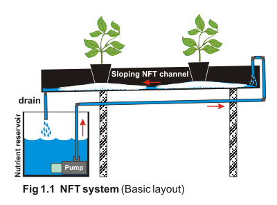
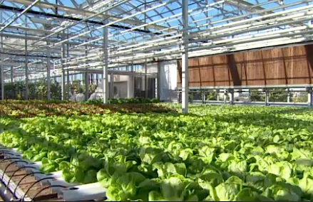

This method is growing plants in a stream of continuously running water. The plants can be placed in a shallow container and the water containing the nutrients runs through the roots.
The system usually runs by gravity: the rectangular container is placed in a slant position so that the water trickles downwards until it has passed though the roots of the plants and into a lower storage container where it is pumped back up to the higher part of the container.
The advantage of this method is that it uses the nutrients efficiently, it allows oxygen to reach the roots (important for healthy growth) and the nutrient solution can be adjusted very easily. The main disadvantage is that if there are problems occured regarding to the circular system and the solution does not flow smoothly(e.g. sulution stays in a pod), it takes time until the whole system is fixed(bad for the plants which are having a lot of or not enough water).
